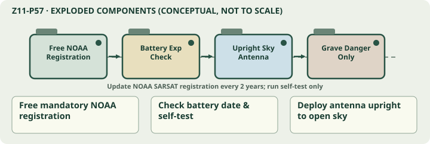

Z11-P57 · Navigation, weather and rescue · New manuscript
Register and maintain a 406 MHz Personal Locator Beacon via NOAA SARSAT
Ensure a 406 MHz PLB triggers accurate, rapid search-and-rescue dispatch when activated in grave danger.
When it applies · Owners and travelers carrying 406 MHz Personal Locator Beacons (PLBs) or marine EPIRBs in the United States.
Equipment · 406 MHz PLB, NOAA beacon registration confirmation (updated every 2 years) and battery expiration check.

Actions
- Register every 406 MHz PLB with NOAA SARSAT immediately upon purchase (required by federal law, free of charge) and update emergency contacts, medical notes and trip details whenever they change or at least every two years.[N05]
- Inspect the printed battery expiration date and run only the manufacturer-specified self-test sequence (never trigger a live SOS test) before extended trips.[N05, E02]
- In a true grave-and-imminent emergency, deploy the antenna vertically per instructions with the clearest possible unobstructed view of the sky, keep the beacon dry and stationary away from body shielding and leave it running continuously until rescue arrives.[N05]
Failure recognition · Activating a PLB deep inside a metal vehicle or wet pack under dense trees, or forgetting to update NOAA registration after buying a used beacon.[N05]
Verify · Confirm current NOAA registration decal/receipt, valid battery expiration date and clear knowledge of antenna deployment and self-test limits.[N05, ED]
Stop or change course · Reserve 406 MHz PLB activation strictly for grave and imminent life-safety emergencies—if accidentally triggered, shut it off immediately and notify NOAA SARSAT / rescue authorities to cancel false dispatch.[N05]
Evidence and editorial notes
- E02 · NPS · Ten Essentials (current web edition)
- Section: Navigation; insulation; emergency shelter; emergency food and water · Conditions: Outdoor trips; adjust kit to season and route
Support: Carry essential systems including navigation, insulation, light, water and emergency shelter.
Limitations: Carrying items without practice or cold-weather verification does not ensure readiness. · Conflicting evidence: None; baseline kit system architecture.
Editorial note: Supports failure-mode packing and kit verification cards. · Specialist reviewer: Field education and search and rescue
Primary source · checked 2026-11-24 - N05 · NOAA · Search and Rescue Satellite Aided Tracking (SARSAT) (current web edition)
- Section: SARSAT Beacons > PLB, EPIRB and Registration · Conditions: Emergency satellite distress signaling (406 MHz PLBs and EPIRBs)
Support: Registered 406 MHz Personal Locator Beacons transmit distress alerts via NOAA SARSAT satellites directly to rescue coordination centers with no subscription; registration with NOAA is legally required and must stay current.
Limitations: PLBs are one-way distress alerts only (no two-way texting), require clear sky view and must be reserved for grave and imminent danger. · Conflicting evidence: Distinguishes one-way 406 MHz PLBs from commercial two-way satellite messengers.
Editorial note: Anchors beacon selection, sky-view limits and registration cards in Z11. · Specialist reviewer: Search and rescue and emergency communications
Primary source · checked 2026-11-24
Source lineage · NOAA SARSAT beacon guidance; new manuscript · Classification · New manuscript.